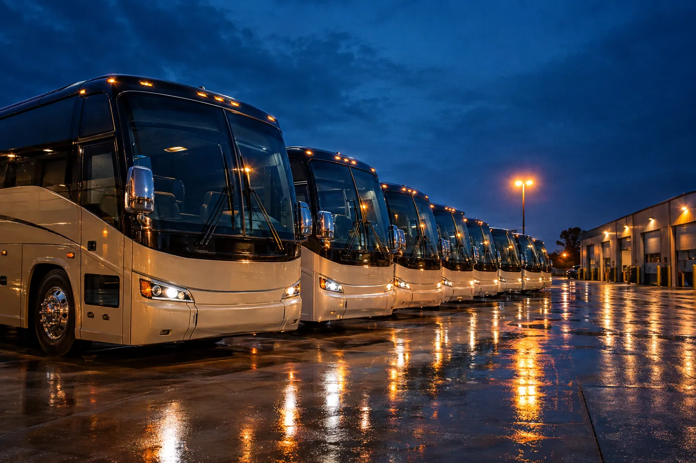

Episode 01 · 18 minBlue Hour: inside a depot that never really sleeps
Four in the morning at a family-owned yard. The wash crew finishes as dispatch builds the board, a technician closes out a brake job, and eleven coaches roll out before sunrise carrying school groups, a corporate shuttle, and a casino run. We stay with them until the last one comes home.
Operator tourDispatchMaintenanceNight shoot